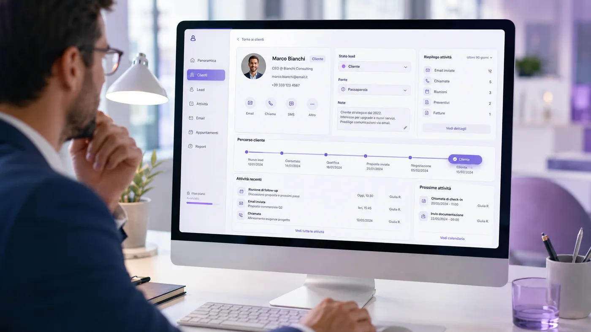
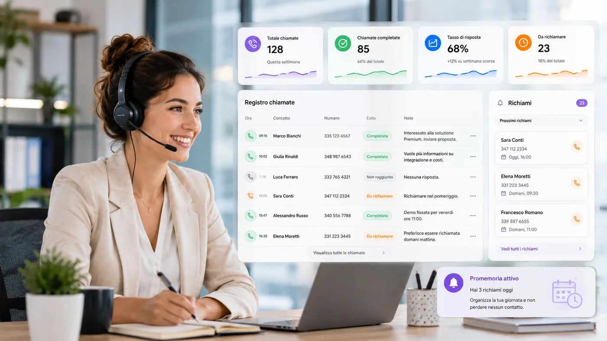
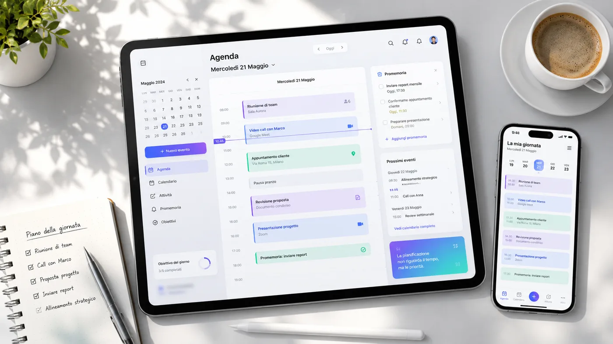
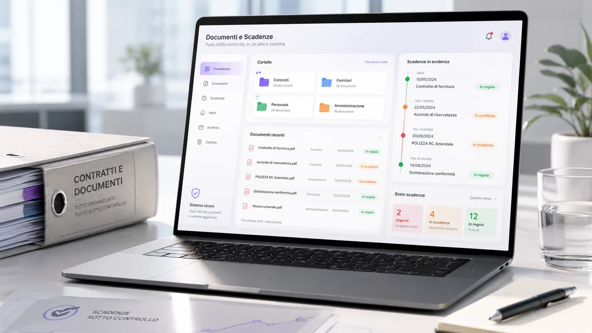

Molte aziende utilizzano ogni giorno strumenti diversi per gestire attività che fanno parte dello stesso processo. I clienti vengono registrati in un foglio Excel, le telefonate vengono annotate su un quaderno, gli appuntamenti finiscono nel calendario personale di un collaboratore e i documenti vengono inviati tramite WhatsApp o salvati in cartelle difficili da ritrovare.
Questo metodo può funzionare quando il numero dei clienti è ancora limitato. Quando l'attività cresce, però, iniziano ad arrivare problemi concreti: informazioni difficili da trovare, telefonate dimenticate, clienti non richiamati, appuntamenti sovrapposti, documenti dispersi e scadenze controllate troppo tardi.
La soluzione consiste nel riunire tutte queste attività all'interno di un unico gestionale aziendale.
I limiti di una gestione frammentata
Utilizzare molti strumenti diversi non significa necessariamente lavorare in modo più organizzato. Spesso accade il contrario.
Un collaboratore può avere una parte delle informazioni sul proprio telefono, un altro può utilizzare un file Excel non aggiornato e un documento può essere salvato in una cartella condivisa mentre le note sul cliente rimangono dentro una conversazione.
Quando le informazioni sono distribuite in posti diversi, anche una semplice ricerca può trasformarsi in una perdita di tempo. L'azienda rischia inoltre di dipendere dalla memoria delle singole persone: se una telefonata non viene registrata o una scadenza non viene segnalata, il problema emerge solo quando è già urgente.


Un unico spazio per seguire il cliente
Un gestionale personalizzato permette di creare una scheda completa per ogni cliente o potenziale cliente.
All'interno della scheda possono essere raccolti dati anagrafici, telefono, e-mail, azienda di appartenenza, origine del contatto, stato della trattativa, richieste, note interne, chiamate effettuate, appuntamenti programmati, documenti collegati, prossime attività e scadenze associate.
In questo modo chi apre la scheda non deve cercare le informazioni in cinque strumenti diversi. Trova tutto nello stesso spazio e può continuare il lavoro anche se il cliente viene seguito da più persone.
Registrare chiamate e richiami
Una telefonata non dovrebbe terminare nel momento in cui si chiude la conversazione. Spesso, proprio dopo la chiamata, iniziano le attività più importanti: inviare un documento, preparare un preventivo, fissare un incontro, richiamare il cliente o aggiornare lo stato della trattativa.
Con un sistema di gestione delle chiamate è possibile registrare data e ora della telefonata, cliente contattato, motivo del contatto, esito della conversazione, note, collaboratore responsabile, data del prossimo richiamo e attività da svolgere.
Il gestionale può mostrare automaticamente le persone da richiamare durante la giornata, senza affidarsi a fogli, post-it o promemoria personali.


Agenda, appuntamenti e attività
Un'agenda aziendale non dovrebbe essere soltanto un calendario. Dovrebbe essere collegata ai clienti, alle attività e alle persone coinvolte.
Attraverso un gestionale personalizzato è possibile programmare appuntamenti in sede, videocall, sopralluoghi, visite, incontri commerciali, firme di documenti, scadenze contrattuali, attività interne e richiami telefonici.
Ogni appuntamento può contenere data, ora, luogo, cliente associato, referente, tipologia dell'incontro, note operative e documenti necessari. La dashboard può mostrare gli appuntamenti della giornata e le attività ancora da completare.
Documenti e scadenze sotto controllo
Contratti, preventivi, documenti di identità, deleghe, fatture, certificazioni e allegati possono essere collegati direttamente alla scheda del cliente.
Ogni collaboratore autorizzato può verificare quali documenti sono presenti, quali mancano, a quale cliente appartengono, quando sono stati caricati, chi li ha inseriti, quando scadranno e se devono essere rinnovati.
Le scadenze possono essere ordinate automaticamente per urgenza: documenti già scaduti, scadenze entro sette giorni, scadenze entro trenta giorni e documenti ancora validi. Il sistema può inoltre mostrare avvisi e promemoria prima della data prevista.

Una dashboard che mostra cosa fare
Quando si accede al gestionale, l'azienda non dovrebbe vedere soltanto numeri. Dovrebbe vedere subito cosa richiede attenzione.
La schermata principale può mostrare clienti totali, nuovi contatti, richiami da effettuare, appuntamenti della giornata, attività in sospeso, documenti in scadenza, ultimi contatti registrati, andamento delle trattative e provenienza dei clienti.
Ogni informazione viene trasformata in un'azione concreta. Il collaboratore non deve perdere tempo a controllare ogni singola sezione: la dashboard riunisce le priorità e permette di iniziare la giornata sapendo già cosa fare.
Un gestionale costruito intorno all'azienda
Ogni attività utilizza procedure, termini e modalità operative differenti. Per questo motivo un software generico non sempre riesce ad adattarsi al lavoro reale.
Un gestionale personalizzato può essere progettato partendo da domande precise: come vengono acquisiti i clienti, quali informazioni devono essere registrate, chi gestisce le chiamate, quando va ricontattato un potenziale cliente, quali appuntamenti vengono programmati, quali documenti vengono richiesti e quali scadenze devono essere controllate.
Le sezioni, i campi, i pulsanti e le automazioni vengono progettati in base alle attività che l'azienda svolge ogni giorno.
A quali attività può essere utile
Un gestionale di questo tipo può essere adattato a numerosi settori in cui clienti, pratiche, comunicazioni e documenti devono restare collegati.
- Agenzie immobiliari
- Società che gestiscono locazioni
- Studi professionali e consulenti
- Amministratori condominiali
- Call center e uffici commerciali
- Imprese di manutenzione
- Aziende di servizi
- Attività commerciali
- Società che gestiscono pratiche, documenti e rinnovi
I benefici della digitalizzazione aziendale
La digitalizzazione non serve soltanto a eliminare la carta. Serve soprattutto a rendere il lavoro più semplice, chiaro e controllabile.
Informazioni centralizzate
Clienti, chiamate, appuntamenti e documenti restano nello stesso sistema.
Meno dimenticanze
Richiami, scadenze e attività vengono mostrati prima che diventino urgenti.
Collaborazione più fluida
Ogni persona autorizzata può riprendere il lavoro con informazioni aggiornate.
Conclusione
Ogni cliente lascia una traccia: una telefonata, un appuntamento, un documento, una richiesta o una scadenza.
Il problema nasce quando queste informazioni vengono conservate in posti diversi. Grazie a un gestionale personalizzato è possibile riunire tutto in un unico sistema e trasformare attività frammentate in un flusso di lavoro più semplice e organizzato.
Meno fogli, meno messaggi da cercare, meno informazioni affidate alla memoria. Più ordine, maggiore controllo e più tempo da dedicare ai clienti.
Domande frequenti sui gestionali clienti
Che differenza c'è tra un CRM e un gestionale personalizzato?
Un CRM aiuta soprattutto a gestire clienti e trattative. Un gestionale personalizzato può includere anche documenti, scadenze, appuntamenti, attività interne, notifiche e procedure specifiche dell'azienda.
Si possono collegare documenti e scadenze alla scheda cliente?
Sì. Ogni cliente può avere una scheda con file, allegati, date di scadenza, promemoria e storico delle attività svolte.
Il gestionale può essere usato da smartphone?
Sì. Una web app responsive può essere consultata da computer, tablet e smartphone, così il team può aggiornare dati, chiamate e appuntamenti anche fuori ufficio.
Vuoi creare un gestionale costruito intorno alla tua azienda?
NA Creator Italia realizza applicazioni e gestionali aziendali personalizzati per organizzare clienti, chiamate, appuntamenti, documenti e scadenze.
Richiedi una consulenza gratuita